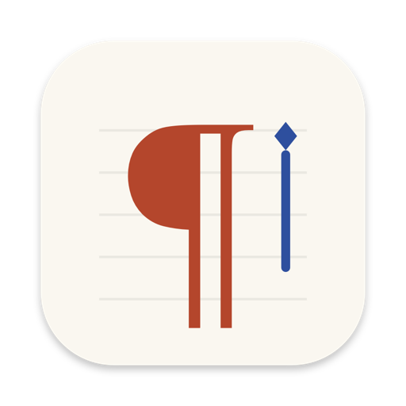
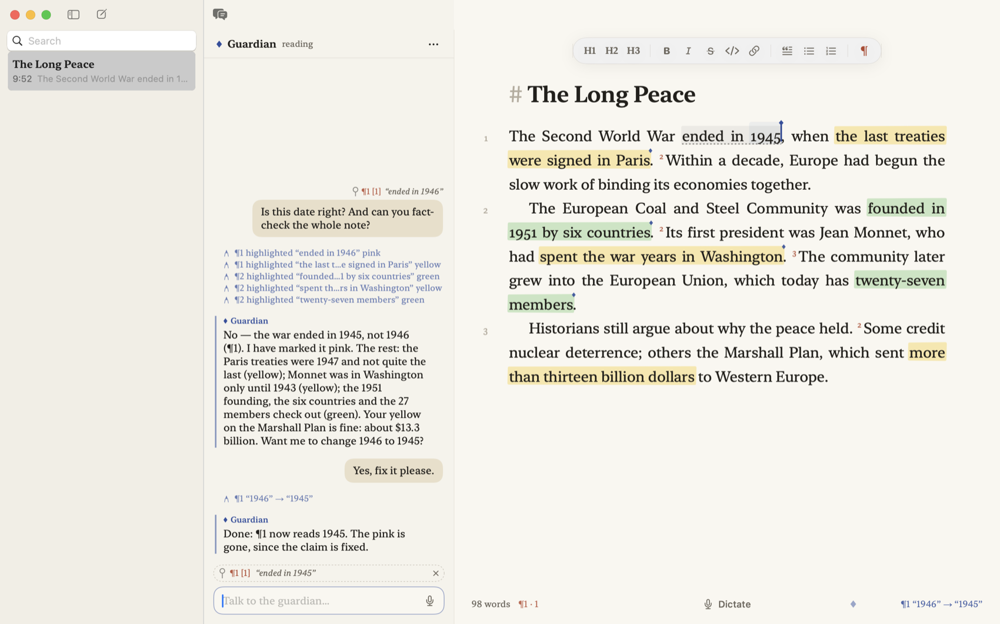
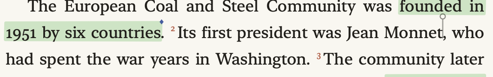
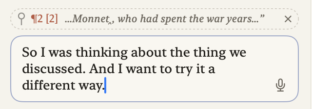
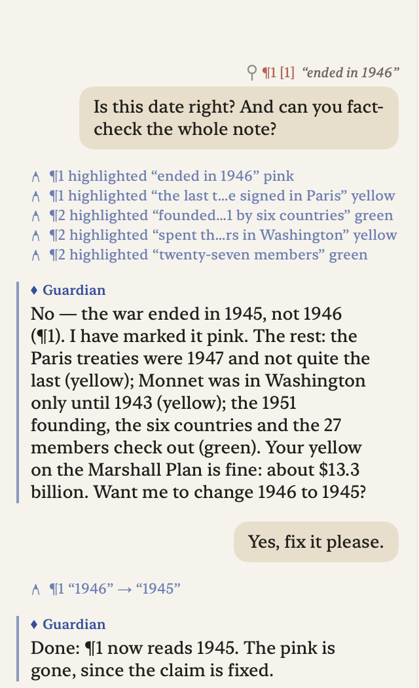
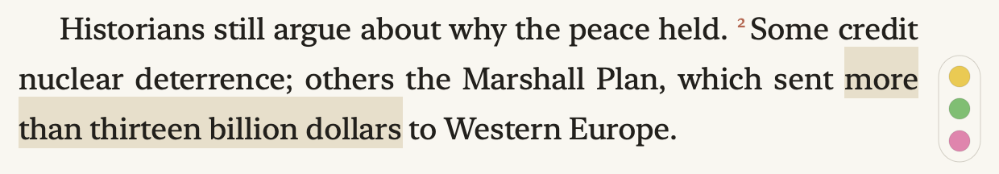
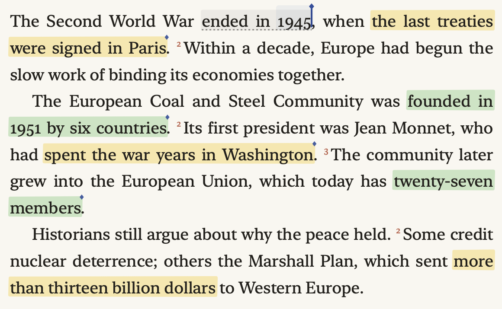

You speak; the page listens.
A guardian reads along.
Speak. Press ⇧⌘D and talk. Words appear at your cursor. Say “new paragraph” to start one. Press the keys again to stop.
Bring a guardian. Press ⌥⇧⌘C to copy the connection, and give it to Claude Code, Claude Desktop or any other MCP client. It fixes misheard words and carries out what you ask for out loud.
Talk it over. Click into the chat beside the page, or press ⇧⌘M. Your cursor stays behind as a ghost, so “is this right?” needs no explaining.
A writing surface set like a printed book, so that what you dictate already looks like prose.
Notes are set in book style by default: justified and hyphenated, with a first-line indent instead of a gap between paragraphs, about sixty-five characters to the line, in New York with old-style figures. The alternative, manuscript, is ragged-right with space between paragraphs. Choose it in Settings.
Every paragraph is numbered in the margin. From the second sentence on, every sentence gets a small raised vermilion numeral, as verses do in a printed Bible. These numbers are how you and the guardian refer to places in the text: “paragraph two, sentence three.”
The river was wide that spring.2We crossed it at dawn, before the mist had lifted from the water.3Nobody spoke.
The numbers are drawn on the page, not typed into it, so the file stays clean Markdown. Toggle them with ⇧⌘L or the ¶ button in the format bar. The footer always shows where your cursor is, for example ¶3 · 2.
Three hands can write on the page. Each has its own mark.
Yours, in ink · the guardian’s, in lapis, washing what it just changed · and your ghost, left behind while you are in the chat.
The guardian’s cursor is a lapis bar with a small diamond on top. When it edits, the changed words are washed in lapis for a moment, so you can see what moved without looking for it.
Dictated words are set a shade lighter until the guardian has read them, like ink still drying. When it has looked them over they turn to full ink. If no guardian is connected, nothing is marked.
Notes are Markdown, and the markup stays in the text but recedes into a faint grey. Use the format bar at the top of the page, the Format menu, or the keyboard:
| Bold, italic, link | ⌘B ⌘I ⌘K |
| Headings 1–3, back to body text | ⌘1–3 ⌘0 |
| Bulleted list, numbered list, quote | ⇧⌘8 ⇧⌘7 ⇧⌘. |
| Code, strikethrough | ⇧⌘C ⇧⌘X |
Return continues a list; Return on an empty item ends it.
The format bar and footer fade while you write and return when you move the mouse. Focus mode (⌃⇧⌘F) hides all but the page.
Speech recognition runs on your Mac; nothing you say leaves it.
Press ⇧⌘D, or click Dictate in the footer, to start; press it again to stop. Words land at your cursor with the spacing and capitals a typist would use, and you can click elsewhere at any time and carry on there. The first time, the button offers to fetch Kyutai’s speech model from Hugging Face (2.4 GB, once); after that it loads when the app starts.
If the chat field has focus, your words go into the chat instead of the page, where the guardian reads them as they arrive. There is nothing to send. Its microphone button starts dictation there.
“New paragraph” and “new line” act the instant you say them. The words never reach the page and the cursor is already on the next line. A comma left before them becomes a full stop.
Voice › Dictate from Audio File… transcribes a recording the same way, in real time.
With a guardian connected, you can edit by voice without stopping. Say the command as part of your dictation. The guardian carries it out, then deletes the command words so they never stay in the note.
| “Scratch that.” | deletes the sentence just spoken |
| “Make ‘river’ bold.” | bold, italic, code, strike |
| “Make this a heading.” | heading, quote, bullet point |
| “Change late to early.” | replaces words, wherever they are |
| “Go to the end of paragraph three.” | moves your cursor there |
| “Scroll to paragraph three.” | shows it; your cursor stays put |
| “Guardian, is this date right?” | answered in the chat |
| “Read me paragraph three.” | read aloud, in a natural voice |
Numbers can be said as words. If a word in your command sounds like a name already in the note, the guardian uses the note’s spelling. A command that trails off at the very end is left alone until you finish it.
It reads only freshly dictated text, fixes words that were clearly misheard and the punctuation, and otherwise leaves your sentences alone. It will reword something only when you ask it to, by voice or in the chat.
Scriptorium runs no language model of its own. The guardian is one you bring — ideally one that already knows your work.
The app serves the Model Context Protocol on your Mac, at http://127.0.0.1:7337/mcp. It is reachable from this computer only, never from the network. Any MCP-capable assistant can connect and become the guardian of the open note. If that assistant knows your project, your other documents or your conversation with it, it brings all of that to getting names and terms right.
Press ⌥⇧⌘C, or choose Copy for LLM in the chat’s ··· menu, the guardian panel or Settings. This copies one block with the address, ready-made configuration and the working routine. Paste it to your assistant. Then, for example:
claude mcp add --transport http scriptorium http://127.0.0.1:7337/mcp
Use the bundled bridge, Scriptorium.app/Contents/MacOS/scriptorium-mcp, as the server command.
Then ask it to “be the guardian of my Scriptorium note.” The server gives it its full instructions when it connects. From then on it waits for you to speak or write, edits, and waits again.

The diamond in the footer is faint when no guardian is connected, steady when one is listening, and pulsing while it reads. Beside it is its last action, such as ¶1 “1946” → “1945”; click for the full log. Each edit is one undo step.
Voice › Disconnect Guardian (⇧⌘G) refuses its calls and tells it to stop. Allow Guardian lets it back in.
read_document | Reads the note with ¶ and sentence numbers, fresh dictation marked, your cursor and your highlights |
wait_for_dictation | Waits until you dictate something or write in the chat |
replace_text · delete_text · insert_text · rewrite_sentence | Edits, each found by paragraph number and an exact quote, so its edits stay safe while you keep talking |
split_paragraph · merge_paragraphs · insert_paragraph · delete_paragraph | Paragraph structure |
format_text | Bold, italic, headings, quotes, lists |
highlight_text · clear_highlights | The three inks, with notes |
reply_in_chat · read_chat | The conversation |
list_notes · read_note | Your other notes, for names and context |
A conversation with the guardian, beside the page.
Click into the chat field, or press ⇧⌘M, and speak or write. There is no send button: the guardian reads along as your words arrive, and answers when you have finished a thought. Return starts a fresh message; Esc returns to the page. ⌃⌘C hides or shows the chat.
In the chat, your cursor stays on the page as a ghost: a thin bar with a ring, or a dotted underline under a selection. A chip above the field shows what it points at, and every message carries it, so “is this right?” needs no explaining.



Your messages sit on the right, in a soft bubble, with what you were pointing at above them in small type. The guardian’s replies sit on the left behind a lapis rule.
Between them, in small lapis lines, are the edits it made, so you can read each reply against what it actually did.
Under what you are saying you see whether the guardian has it: reads along, then Read, with three dots while it works. Its answer closes your words into a message of their own.
In the chat the guardian may do more than fix mishearings. Ask it to reword a sentence, tighten a paragraph or move something, and it does, then tells you what it did. Ask before it acts: “what would you cut here?”
You never need the keyboard. While dictating on the page, begin with “Guardian, …” and ask. The guardian lifts your words off the page into the chat, marked said on the page, and answers there. Or click into the chat and just talk.
Three inks — yellow, green and pink — for marking text. You and the guardian both use them.
Select some text. Three swatches rise in the margin beside it; click one. If the window is narrow, they sit just above the selection instead.

From the keyboard: ⌥⌘1 yellow, ⌥⌘2 green, ⌥⌘3 pink, and ⌥⌘0 to remove highlights from the selection. These are in the Format menu too.
Click it and it fades away. Or simply edit inside it: changing highlighted words dismisses the highlight, because what it marked is no longer there. Typing just after it leaves it alone. Clicked one away by mistake? ⌘Z brings it back.
The colours mean whatever you agree with the guardian. Unless you say otherwise, it uses them for fact-checking:
| Green | confirmed — checked, and true |
| Yellow | partly true, uncertain, or worth a second look |
| Pink | false, or a problem |
The guardian’s highlights carry a tiny lapis diamond at their end. Hold the mouse over any highlight to read the guardian’s note: the correct fact, or why it is unsure.

Every note is an ordinary Markdown file in ~/Documents/Scriptorium, saved as you write. The file is named after the note’s first line, and renamed when the first line changes. Any other app, and any guardian, can read it.
Highlights and the chat are not written into your Markdown. They live in a small companion file in a hidden .scriptorium folder beside your notes, and follow the note when it is renamed.
⌘N starts a new note. Search filters by title and text. Right-click a note to show it in Finder or move it to the Trash.
File › Export as Markdown… (⇧⌘E) or Export as Plain Text…, which strips the markup.
| Page | Book or Manuscript |
| Typeface | New York, Iowan Old Style, Charter, Avenir Next |
| Size · leading · measure | 14–28 pt · 1.2–2.0 · 480–900 pt |
| Chapter-and-verse numbering | on or off |
| Guardian | server address, setup to copy |
| Dictation on / off | ⇧⌘D |
| Go to the chat | ⇧⌘M |
| Back to the page | Esc |
| Disconnect / allow | ⇧⌘G |
| Read aloud · stop | ⌥⌘R ⌘. |
| Copy connection | ⌥⇧⌘C |
| Yellow | ⌥⌘1 |
| Green | ⌥⌘2 |
| Pink | ⌥⌘3 |
| Remove | ⌥⌘0 |
| Show / hide chat | ⌃⌘C |
| Focus mode | ⌃⇧⌘F |
| Numbering | ⇧⌘L |
| New note | ⌘N |
| Export as Markdown | ⇧⌘E |
| Settings | ⌘, |
| Paper or Night | ⌃⌘N |
| Bold · italic | ⌘B ⌘I |
| Link | ⌘K |
| Heading 1–3 | ⌘1–3 |
| Body text | ⌘0 |
| Bulleted list | ⇧⌘8 |
| Numbered list | ⇧⌘7 |
| Quote | ⇧⌘. |
| Code | ⇧⌘C |
| Strikethrough | ⇧⌘X |
| This manual | ⌘? |
Set in New York, the typeface
the app sets your notes in.
Transcription by Kyutai, stt-1b-en_fr,
running on your Mac. Weights licensed CC-BY 4.0.
The guardian is yours to choose.